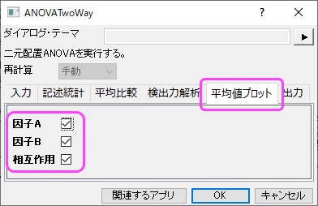

二元配置分散分析
TwoWayANOVA
概要
いくつかのケースでは、2つの因子（カテゴリ変数）と連続的な結果変数間の関係を調べたいことがあります。1要因での変化の結果への影響は、他の因子のレベルに依存する可能性があるので、2つの要因間の相互作用を考慮する必要があります。二元配置ANOVAは、2つの要因の主要な影響とのそれらの交互作用を分析するための適切な方法です。
必要なOriginのバージョン:Origin 2016 SR0以降
学習する項目
このチュートリアルでは、以下の項目について解説します。
- 二元配置ANOVAの実行
- 二元配置ANOVAの結果の解釈
- 相互作用プロットの作成
ステップ
研究者は、性別と食物グループの最高血圧（SBP）における効果に興味を持っています。因子"dietary group"（食物グループ）には、3つのグループがあり、どんな動物性の食物も摂取しない厳格なベジタリアン（SV）、動物性食品の中でも乳製品は食べるラクトベジタリアン（LV）、普通のアメリカの食事を摂るノーマル（NOR）に分けられます。性別と食物グループは独立、またはお互いに相互作用があるかもしれません。この問題を解く方法の一つとして、平均SBPレベルを予測する二元配置ANOVAモデルを構築する方法があります。
インデックスデータモード
二元配置分散分析の実行
- 新しいワークブックを開き、\Samples\Statistics\SBP_Index.dat ファイルを開きます。
- メニューから統計：ANOVA：二元配置と選択してANOVATwoWayダイアログを開き、入力タブにて入力データをインデックスに設定します。
- また入力タブにて、A、B、C列をそれぞれ因子A、因子B、データに設定します。相互作用にチェックを入れます。
- 記述統計タブを選択し、全てのボックスにチェックを入れます。
- 平均比較タブの有意水準を0.05にし、Tukeyのボックスにチェックを付け、これを比較手法とします。
- OKボタンをクリックして二元配置ANOVAを実行します。
結果の解釈
二元配置ANOVAの結果シートにある「全般ANOVA」表から、Dietary と Sex は両方とも有意な因子であるが、それらの間の相互作用は有意ではないことが読み取れます。Sex とDietaryの両方の主効果が有意であることを意味し、Dietary の変化による結果の影響は、Sexのレベルには依存しないということを意味します。
相互作用プロット
さらに相互作用を検出するために、「相互作用プロット」を以下の手順で作成します。
- ANOVA2Way1結果シートにある緑色の錠前マークをクリックし、パラメータを変更を選択してダイアログを再度開きます。
- 平均値プロットのタブを開いて、全てのチェックボックスにチェックを入れます。
- 
- We will get the Interaction plot
再計算
- ANOVA2Way1結果シートにある緑色の錠前マークをクリックし、パラメータを変更を選択してダイアログを再度開きます。
- ダイアログの入力タブで、相互作用のチェックを外し、OKボタンをクリックします。
「全般ANOVA」表により、Dietary と Sexは有意な因子であることがわかります。平均比較の表から因子Dietary では、Nor の平均はLV と SV の平均により有意に大きく、男性の平均は女性のものより有意に大きいことがわかります。

素データモード
- 新しいワークブックを開き、\Samples\Statistics\SBP_Raw.dat ファイルを開きます。
- ワークシートのすべての列を選択し、統計：ANOVA：二元配置を選択すると、ANOVATwoWay ダイアログボックスが開きます。入力タブにて、入力データのモードを素データ値を選びます。
- また入力タブにて、因子Aのレベルの数を2とし、因子Aブランチにある名前のレベル1名前・レベル2名前入力ボックスにSex 、Male、Femaleと入力します。
- また入力タブにて、因子Bのレベルの数を3とし、因子Bブランチにある名前のレベル1名前・レベル2名前・レベル3名前入力ボックスにSV 、LV、Norと入力します。
- 平均比較タブの「+」をクリックして項目を開き、有意水準を0.05にし、Tukeyのボックスにチェックを付け、これを比較手法とします。
- OKボタンをクリックして二元配置ANOVAを実行します。